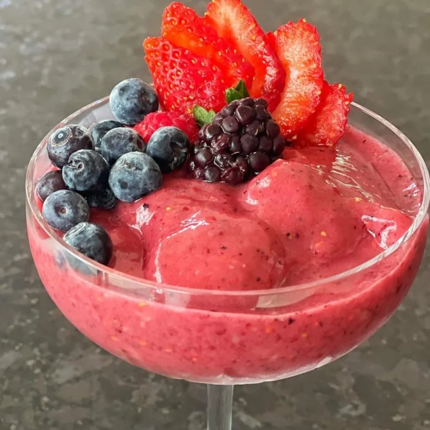

Receita de smoothie de banana e frutas vermelhas
Sobre a receita
Desfrute de uma explosão de sabores e nutrientes com este delicioso smoothie de banana e frutas vermelhas! Feito com bananas congeladas, morangos, mirtilos e amoras, essa receita é uma ótima opção para começar o dia com energia ou para um lanche saudável durante o dia. Combinando a doçura da banana com o sabor ácido das frutas vermelhas, essa receita é uma ótima opção para quem quer se manter saudável e se deliciar com um sabor incrível ao mesmo tempo. Experimente já!
Ingredientes
- 2 bananas bem maduras (prata, nanica ou banana maçã)
- 4 morangos
- 4 framboesas
- 20 mirtilos
- 4 amoras grandes
- 100ml de água
- Mel a gosto (opcional)
Modo de preparo
- Descasque as bananas, pique elas e, com as outras frutas, deixe congelar de um dia para o outro.
- Em um liquidificador ou mixer, adicione todos os ingredientes e bata até ficar homogêneo (reserve algumas para enfeitar).
- Caso queira deixar mais doce, adicione o mel na hora de bater.
- Agora é só servir. Bom apetite.
Receita original